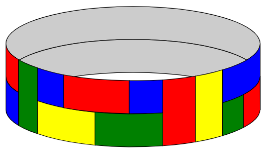
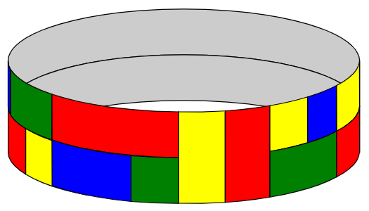

A certain type of flexible tile comes in three different sizes -
\(1\times1, 1\times2,\) and \(1\times3\) - and in \(k\) different colours. There is an
unlimited number of tiles available in each combination of size and
colour.
These are used to tile a closed loop of width \(2\) and length (circumference) \(n\), where \(n\) is a positive integer, subject to the
following conditions:
The loop must be fully covered by non-overlapping tiles.
It is not permitted for four tiles to have their corners
meeting at a single point.
Adjacent tiles must be of different colours.
For example, the following is an acceptable tiling of a \(2\times 23\) loop with \(k=4\) (blue, green, red and yellow):

but the following is not an acceptable tiling, because it violates
the “no four corners meeting at a point” rule:

Let \(F_k(n)\) be the number of ways
the \(2\times n\) loop can be tiled
subject to these rules when \(k\)
colours are available. (Not all \(k\)
colours have to be used.) Where reflecting horizontally or vertically
would give a different tiling, these tilings are to be counted
separately.
For example, \(F_4(3) = 104\), \(F_5(7) = 3327300\), and \(F_6(101)\equiv 75309980
\pmod{1\,000\,004\,321}\). Find \(F_{10}(10\,004\,003\,002\,001) \bmod
1\,000\,004\,321\).
defsolve(k, n, mod=MOD): defstate_to_int(b, t): if b: return t c, d, x, y = t mp = {(0, 0): 0, (1, 0): 1, (0, 1): 2, (2, 0): 3, (0, 2): 4, (1, 2): 5, (2, 1): 6} j = mp[(c, d)] return3 + 9 * j + 3 * x + y
defint_to_state(i): if i < 3: returnTrue, i j, m = divmod(i - 3, 9) mp = [(0, 0), (1, 0), (0, 1), (2, 0), (0, 2), (1, 2), (2, 1)] c, d = mp[j] x, y = divmod(m, 3) returnFalse, (c, d, x, y)
defbuild_matrix(): size = 66 M = [[0] * size for _ inrange(size)] for i inrange(size): b, t = int_to_state(i) if b: for c in (0, 1, 2): if t != 0and t == c: continue z = (k - 2 - int(t == 0)) if c == 0else1 j = state_to_int(True, c) M[i][j] = (M[i][j] + z) % mod for c, d in product((0, 1, 2), (0, 1, 2)): if c != 0and c == d: continue if t != 0and (c == t or d == t): continue if (c, d) == (0, 0): z = (k - 3) * (k - 4) if t == 0else (k - 2) * (k - 3) elif c == 0or d == 0: z = (k - 3) if t == 0else (k - 2) else: z = 1 j = state_to_int(False, (c, d, 0, 0)) M[i][j] = (M[i][j] + z) % mod else: c, d, x, y = t for C in (0, 1, 2): if C == 0: z = k - 2 - int(c == 0) - int(d == 0) else: z = int(C != c and C != d) j = state_to_int(True, C) M[i][j] = (M[i][j] + z) % mod for C, D, X, Y in product((0, 1, 2), (0, 1, 2), (0, x + 1), (0, y + 1)): if X == 0and Y == 0: continue if X > 2or Y > 2: continue if C != 0and C == D: continue if (X > 0and C != c) or (Y > 0and D != d): continue if (X == 0and C == c and C != 0) or (Y == 0and D == d and D != 0): continue if (X == 0and C == 0) or (Y == 0and D == 0): z = k - 2 - int(c == 0) - int(d == 0) else: z = 1 j = state_to_int(False, (C, D, X, Y)) M[i][j] = (M[i][j] + z) % mod return M
defmat_mul(A, B, mod): return [[sum(A[i][k] * B[k][j] for k inrange(len(A[0]))) % mod for j inrange(len(B[0]))] for i in range(len(A))]
defmat_pow(M, e): n0 = len(M) R = [[0] * n0 for _ inrange(n0)] for i inrange(n0): R[i][i] = 1 A = M while e: if e & 1: R = mat_mul(R, A, mod) e >>= 1 if e: A = mat_mul(A, A, mod) return R
M = build_matrix() Mn = mat_pow(M, n)
res = 0 i = state_to_int(True, 1) res = (res + k * Mn[i][i]) % mod for x inrange(3): for y inrange(3): i = state_to_int(False, (1, 2, x, y)) res = (res + k * (k - 1) * Mn[i][i]) % mod
inv_n = pow(n, mod - 2, mod) return res * inv_n % mod
deffactorization(n): ls = list(sympy.factorint(n).items()) ls.sort() return ls
defsolve_any_n(k, n, mod=MOD): defstate_to_int(b, t): if b: return t c, d, x, y = t mp = {(0, 0): 0, (1, 0): 1, (0, 1): 2, (2, 0): 3, (0, 2): 4, (1, 2): 5, (2, 1): 6} j = mp[(c, d)] return3 + 9 * j + 3 * x + y
defint_to_state(i): if i < 3: returnTrue, i j, m = divmod(i - 3, 9) mp = [(0, 0), (1, 0), (0, 1), (2, 0), (0, 2), (1, 2), (2, 1)] c, d = mp[j] x, y = divmod(m, 3) returnFalse, (c, d, x, y)
defbuild_matrix(mod_now): size = 66 M = [[0] * size for _ inrange(size)] for i inrange(size): b, t = int_to_state(i) if b: for c in (0, 1, 2): if t != 0and t == c: continue z = (k - 2 - int(t == 0)) if c == 0else1 j = state_to_int(True, c) M[i][j] = (M[i][j] + z) % mod_now for c, d in product((0, 1, 2), (0, 1, 2)): if c != 0and c == d: continue if t != 0and (c == t or d == t): continue if (c, d) == (0, 0): z = (k - 3) * (k - 4) if t == 0else (k - 2) * (k - 3) elif c == 0or d == 0: z = (k - 3) if t == 0else (k - 2) else: z = 1 j = state_to_int(False, (c, d, 0, 0)) M[i][j] = (M[i][j] + z) % mod_now else: c, d, x, y = t for C in (0, 1, 2): if C == 0: z = k - 2 - int(c == 0) - int(d == 0) else: z = int(C != c and C != d) j = state_to_int(True, C) M[i][j] = (M[i][j] + z) % mod_now for C, D, X, Y in product((0, 1, 2), (0, 1, 2), (0, x + 1), (0, y + 1)): if X == 0and Y == 0: continue if X > 2or Y > 2: continue if C != 0and C == D: continue if (X > 0and C != c) or (Y > 0and D != d): continue if (X == 0and C == c and C != 0) or (Y == 0and D == d and D != 0): continue if (X == 0and C == 0) or (Y == 0and D == 0): z = k - 2 - int(c == 0) - int(d == 0) else: z = 1 j = state_to_int(False, (C, D, X, Y)) M[i][j] = (M[i][j] + z) % mod_now return M
defmat_mul(A, B, mod): return [[sum(A[i][k] * B[k][j] for k inrange(len(A[0]))) % mod for j inrange(len(B[0]))] for i in range(len(A))]
defmat_pow_from_powers(pw, e, mod_now): n0 = len(pw[0]) R = [[0] * n0 for _ inrange(n0)] for i inrange(n0): R[i][i] = 1 b = 0 while e: if e & 1: R = mat_mul(R, pw[b], mod_now) e >>= 1 b += 1 return R
defrooted_count_from_power(Mn, mod_now): res = 0 i = state_to_int(True, 1) res = (res + k * Mn[i][i]) % mod_now for x inrange(3): for y inrange(3): i = state_to_int(False, (1, 2, x, y)) res = (res + k * (k - 1) * Mn[i][i]) % mod_now return res
defgen_divisors_with_phi(fac): ans = [] defdfs(idx, d, ph): if idx == len(fac): ans.append((d, ph)) return p, e = fac[idx] dfs(idx + 1, d, ph) dd = d pp = ph for t inrange(1, e + 1): dd *= p if t == 1: pp2 = pp * (p - 1) else: pp2 = pp * (p - 1) * (p ** (t - 1)) dfs(idx + 1, dd, pp2) dfs(0, 1, 1) return ans
fac = factorization(n) divs_phi = gen_divisors_with_phi(fac) need_ms = sorted({n // d for d, _ in divs_phi}) mod_for_dp = mod if n % mod != 0else mod * n
M = build_matrix(mod_for_dp) pw = precompute_powers(M, max(need_ms), mod_for_dp)
g_cache = {} for m in need_ms: Mn = mat_pow_from_powers(pw, m, mod_for_dp) g_cache[m] = rooted_count_from_power(Mn, mod_for_dp)
num = 0 for d, ph in divs_phi: m = n // d num = (num + (ph % mod_for_dp) * g_cache[m]) % mod_for_dp
if n % mod != 0: return num * pow(n % mod, mod - 2, mod) % mod